Christopher Nolan's Dark Knight Trilogy is the most thematically rich and intellectually dense comic book movie series ever made. There are so many intricacies to the films that combine to tell a grand story. In this article, I try to dissect those intricacies, and take a look at what make it so great. The trilogy has two main interwoven storylines: The salvation of Gotham City, and the salvation of Bruce Wayne. These are two concepts that both have their basis in the night Bruce Wayne's parents were murdered. There is a certain poeticism that this is a city so corrupt and degraded that it needed a hero like Batman, and it was only because it was like so that Bruce's parents were killed. It is as if the city had sunk so low, eventually something had to happen that was so terrible it could sling it in the opposite direction. That terrible night, the city gave birth to its own savior. This is what Batman is about, and it is the first topic that Nolan's series tackles: The salvation of the city. But so many people forget, there were two things that were set into motion that night. This would lead to the salvation of Gotham. But what about what it did to Bruce? May he only save the city at the cost of his own soul, by becoming a terrible, gothic figure shrouded in darkness? May he himself ever have anything of but a life as a wraith? It is a question that the modern day comics dare not answer. Because if they did, the story would be over. Nolan, however, sought to answer it. Nolan wanted to tell the complete story of Batman, from the beginning of his career to its end. With seven decades years of comic books telling the story, Nolan wanted to, in his own small trilogy; to tell the first onscreen version of that story that had a beginning, a middle, and an end.
Timelapse
Meet Rachel Dawes
2005
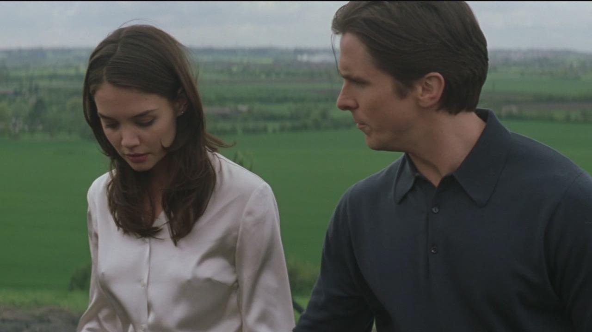
Transformation with Ra's Al Ghul
2005
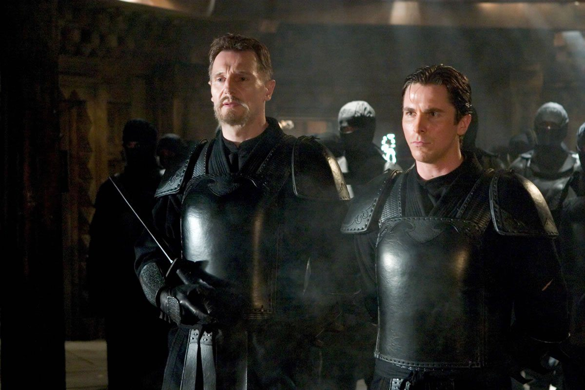
Bruce becomes Batman
2005
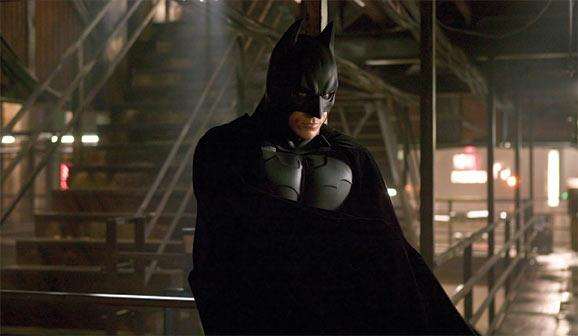
Master of Fear, Scarecrow
2005
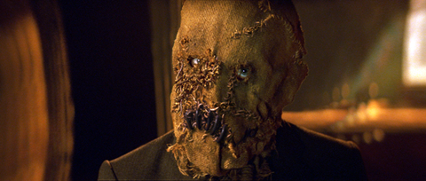
Batman saves Gotham
2005
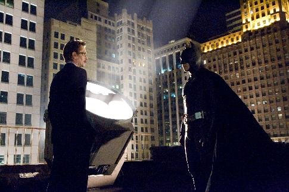
The Hero Gotham needs, Harvey Dent
2008
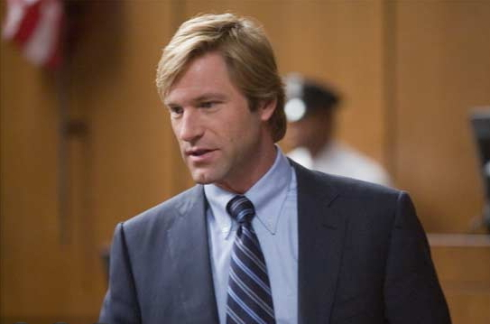
Enter the Joker
2008
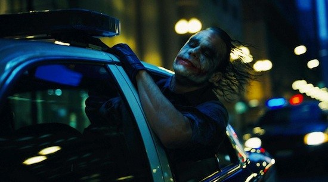
Creating Chaos
2008
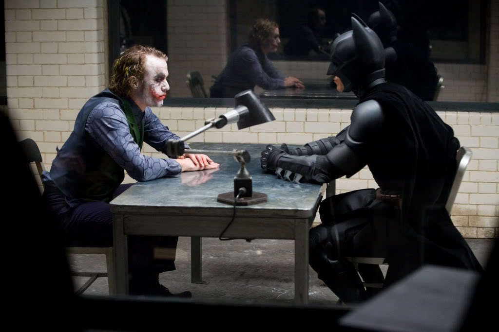
Joker's greatest victory, Two-Face
2008
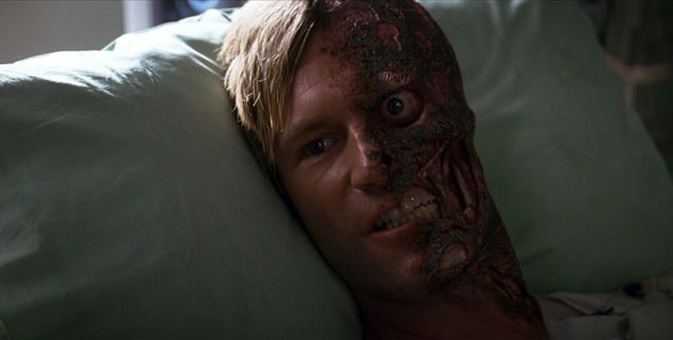
City's Dark Knight
2008
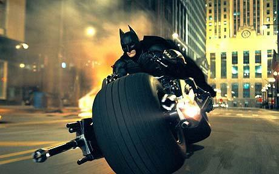
Cat, Selina Kyle
2012
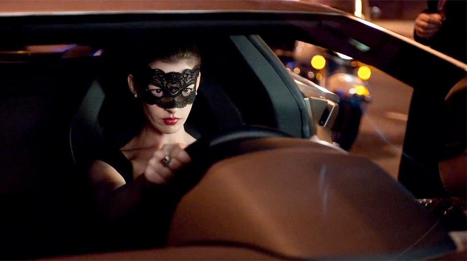
Fellow Moghul, Miranda Tate
2012
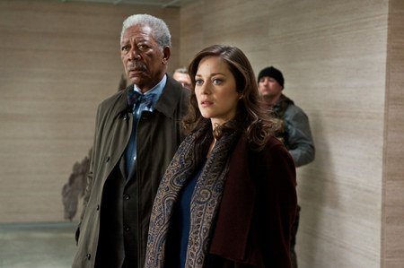
Enter Catwoman
2012
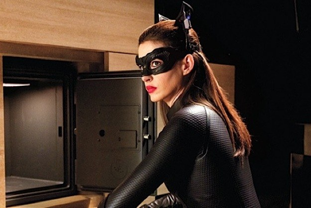
Batman meets Bane
2012
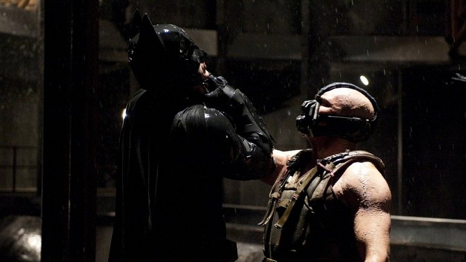
The Pit
2012
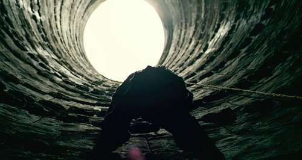
Batman takes on Bane
2012
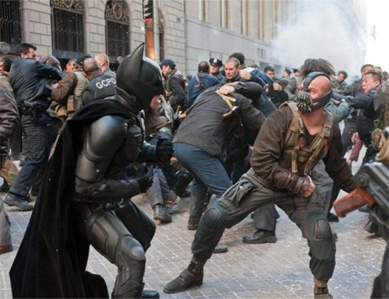
Miranda's Plot
2012
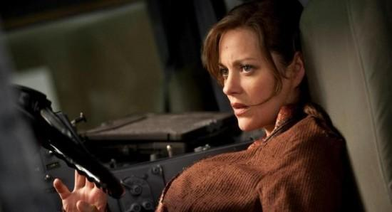
The Legend lives
2012
The Characters
#rise
(click on the images below)
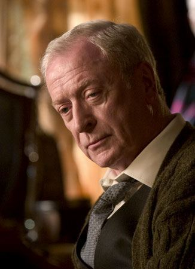
Alfred Pennyworth
Rachel Dawes
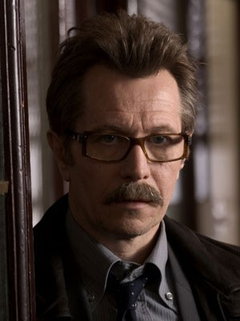
Jim Gordon
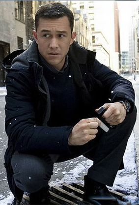
John Blake
Lucious Fox
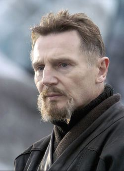
Ra's Al Ghul
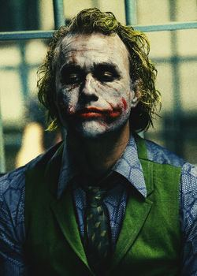
Joker
Two-Face
Jonathan Crane aka Scarecrow
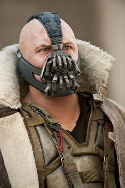
Bane
Selina Kyle aka Catwoman
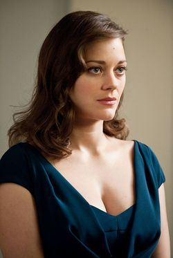
Miranda Tate aka Talia Al Ghul
Alfred Pennyworth
Alfred Pennyworth is officially Bruce Wayne's butler, though unofficially Batman's accomplice and aid in fighting Gotham's criminals. He served in the British military when he was younger. In one mission, he was dispatched with a unit to negotiate with the Burmese government and bribing them with jewels, but were constantly ambushed by a bandit who kept stealing the jewels. It wasn't until they found a kid playing with one of the jewels stolen from them, a ruby the size of a tangerine, that they discovered that the man stole the jewels simply because he wanted to cause chaos; Alfred later reflected that some men are looking for nothing but "to watch the world burn". They later caught the person by burning down his forest.
Rachel Dawes
Rachel Dawes is the deuteragonist in Batman Begins and the tritagonist in The Dark Knight. She was an assistant District Attorney in Gotham City, and a childhood friend and love interest of Bruce Wayne. Rachel is a childhood friend to Bruce Wayne. Rachel's mother worked for Bruce's parents, and the two would often play together on the grounds of Wayne Manor. After Bruce's parents are murdered by Joe Chill, Rachel's mother seeks other employment and leaves Wayne Manor with Rachel. She and Bruce remain close even after he fell in the batcave, but their friendship is never the same.
Jim Gordon
Jim Gordon is one of the few honest cops in Gotham City and an ally of Batman. The film partly concerns Gordon's rise from beat cop to Sergeant and, by the end of the film, Lieutenant. He did his best to comfort the eight-year-old Bruce Wayne after the murder of his parents, when he was a young man, and Wayne later recognizes him as one of the few honest police officers in the city and would always remember his kindness as it gave Bruce the strength he needed after his parents' death.
John Blake
Robin John Blake is an orphan who becomes a police officer and an ally of Batman. During his childhood, Blake's mother died when he was at a young age and later on, his father died when he was nine. With that, he then lived in Gotham City's orphanage. He created a mask for himself by hiding his anger behind a smile. He also idolized Batman, and deduced that Bruce Wayne was the caped crusader when he sees the similar attempt at hiding his anger when the playboy billionaire visited the orphanage.
Lucious Fox
Lucius Fox is a weapons expert and a high-ranking member of Wayne Enterprises. Fox is a research head and friend of Thomas Wayne who is demoted by Wayne Enterprises CEO William Earle to overseeing the supplies of Wayne Enterprises' aborted research projects and prototypes. Upon returning to the business, Bruce Wayne strikes up a fast friendship which allows him to all but recruit Fox as his armorer for his Batman activities. Fox proves invaluable in this role, even when he is fired by Earle. Among other things, he supplies Wayne with the materials that will eventually become the Batsuit and the Batmobile. In addition, Fox provides the cure for the Scarecrow's fear toxin.
Ra's Al Ghul
Ra's al Ghul is the main antagonist of Batman Begins. Ra's Al Ghul was a mentor and teacher to Bruce Wayne under the name Henri Ducard and later became his arch-enemy as Bruce stood in the way of the League of Shadows destroying Gotham. He was the father of Bruce's later romantic interest and foe Talia al Ghul. In 1976, Ra's al Ghul was a skilled mercenary working for a powerful warlord. He fell in love with the warlord's daughter. She conceived a child with him and they secretly became married. Out of a sense of dishonor, the warlord had the mercenary condemned to prison but exiled him instead. The warlord had his daughter take her husband's place in the prison. The mercenary then joined the League of Shadows and rose through the ranks relatively quickly. In the Pit, Ra's' wife gave birth to a daughter that she named Talia , who spent the early years of her life locked up with her mother.
Joker
The Joker was a psychopathic megalomaniacal criminal mastermind who terrorized Gotham and whose goal was to create "a world without rules." No one knows who the Joker really is. Little can be confirmed regarding his early life before he turned to a life of crime. Despite his capture, no traces could be found on his fingerprints, dental records, or DNA matches against the GCPD's databases.
Two-Face
Two-Face is the secondary antagonist in The Dark Knight. Harvey Dent was the newly elected district attorney of Gotham City. After he was horrible disfigured and his girlfriend Rachel Dawes. Motivated by his need for vengeance, he began to pursue those responsible. He used coin flips to decide the fate of his victims. During his childhood years, he was the son of a former cop named Harry Dent. The senior Dent frequently abused Harvey by using a coin to decide whether Harvey will go without a night of beating. Unbeknownst to Harvey at the time, the coin was double-headed, meaning that no matter which side it lands, it always results in his being beaten by his father.
Scarecrow
Dr. Jonathan Crane was a psychiatrist at Arkham Asylum who conducted experiments on inmates using an identity known as the Scarecrow. Dr. Jonathan Crane was a corrupt, sadistic psychiatrist specializing in psycho-pharmacology at Arkham Asylum. Crane was secretly allied with Ra's al Ghul and Carmine Falcone, smuggling the former's hallucinogenic drugs into Gotham to create fear gas to use upon his patients in cruel experiments. Crane testified in court that Victor Zsaz, one of Falcone's assassins, was legally insane and should be moved to Arkham for rehabilitation. This enraged Assistant District Attorney Rachel Dawes, who later accused him of being corrupt.
Bane
Bane is one of the two main antagonists of The Dark Knight Rises. Bane was a terrorist allied with the League of Shadows, serving as one of the organization's leaders after the death of Ra's al Ghul. Potent in both physical combat and strategic planning, Bane was also an articulate orator and effective military commander. Bane is said to have been born and raised in the Pit, a hellish prison located within a Middle Eastern country. He came to regard the prison as a home, a place where he learned "the truth about despair." Bane vaguely claimed to have been "born in [darkness]" and molded by it and that he didn't "see the light" until he was an adult. At some point, he took an interest in the wellbeing of a young female prisoner named Talia, the daughter of another female prisoner and a mercenary.
Catwoman
Selina Kyle is a world-class cat burglar and mistress of disguise in search of a fresh start. She’s cunning, devious, and cynical, but has a deep sense of honor. She targets Gotham’s wealthiest in her schemes. She was the secondary antagonist turned anti-heroine of The Dark Knight Rises. Selina Kyle was born on September 21, 1985. She broke out of a women's correctional facility for the first time when she was sixteen years old. Over the years, she developed a long record of criminality.
Miranda Tate aka Talia al ghul
Talia al Ghul is one of the two main antagonists of The Dark Knight Rises. Talia Al Ghul was the daughter of Ra's al Ghul and the heir of the League of Shadows. Following the death of her father, Talia, along with her friend and partner Bane, took up his mantle and patiently plotted Gotham's destruction while masquerading as wealthy businesswoman Miranda Tate. Talia was born in 1976 and raised in the pit. Her mother, the Warlord's daughter, was imprisoned there by the Warlord to take the place of Talia's exiled mercenary father. when Talia was 4, the prison doctor forgot to lock their cell and her mother was attacked and killed by a group of prisoners.